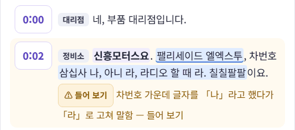

「두 개라고
했잖아요!」
부품 대리점 오후 3시의 흔한 전화 ☎
@acha_lab
✕
녹음 처음부터
다시 듣기?
파일은 시간순으로만 쌓여 있는데…
@acha_lab
가짜 통화 데모
헷갈리는 칸에 뜨는
「들어 보기」
를 누르면
@acha_lab
가짜 통화 데모

그 말을 한
0:02
부터
바로 재생 ▶
@acha_lab
누르면 그 녹음,
3초
면 확인.
부품 주문 전화를
주문 카드로 만들고 있어요
아차 · @acha_lab